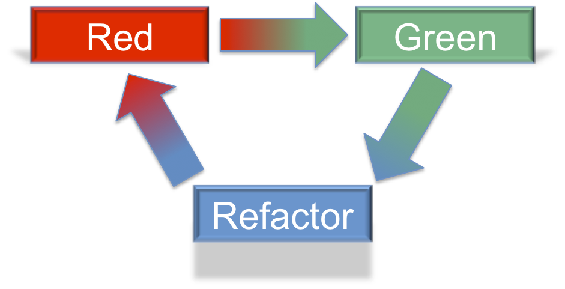

Now that we know more about unit testing, we are going to learn a new way of using them. So far we have written tests to verify functionality of existing code. Next we are going to use tests to verify functionality of code that does NOT already exist. This may sound odd, but this process has many benefits as we will learn.
As the name sounds Test-driven development (TDD) is a software development process where the unit tests are written first. However that doesn't tell the entire story. Writing the tests first and intentionally thinking more about the code design leads to better code. The name comes from the idea of the tests driving the development process.
Before we can start using TDD, we need a list of discrete features that can be turned into unit tests. This will help keep our tests focused on specific functionality which should lead to code that is easy to read. Along the way we will build confidence as we add features.
Note
TDD is a process that some organizations choose to use. Using the TDD process is not required when using unit tests.
With TDD you start with the unit test first. As with any unit test, the test should describe a clearly described behavior that can be tested.
Example
Example test case for a data parsing project.
Because the test is for a feature that does NOT exist yet, we need to think about how the feature will be implemented. This is the time to ask questions like. Should we add a new parameter? What about an entirely new function? What will the function return?
Example
How could we implement our test case? Remember we aren't writing the code yet, only thinking about the design.
parseDataparseData willdata parameter will a string of datadelimiter parameter will be used to split the arrayparseData will be defined in a moduleNext, write the unit test as if the parameter or function you imagined already exists.
This may seem a bit odd, but considering how the new code will be used helps find bugs and flaws earlier.
We also have to use test utilities such assert.strictEqual to clearly demonstrate
that the proposed new code functions properly.
Example
This is where the ideas are typed out into a test. In this example the test references
a module and a function that have not been created yet. The code follows the plan
we came up with earlier. Very importantly there is an assert.strictEqual
that verifies an array is returned.
1 2 3 4 5 6 7 8 9 10 11 | const assert = require('assert');
const parse = require('../parse-numbers');
describe("parse numbers", function(){
it("returns array when passed comma separated list of numbers", function(){
let items = parse("5,8,0,17,6,4,9,3", ",");
assert.strictEqual(Array.isArray(items), true);
});
});
|
Now run the test! The test should fail or possibly your code will not compile because you have referenced code that does not exist yet.
Finally, write code to pass the new test. In the earlier chapters, this is where you started, but with TDD writing new code is the last step.
Example
To make the above test pass a file would be created that exports a parseData function
with logic that satisfies the expected result.
1 2 3 4 5 | function parseData(text, delimiter) {
return text.split(delimiter);
}
module.exports = parseData;
|
Coding this way builds confidence in your work. No matter how large your code base may get, you know that each part has a test to validate its functionality.
Example
Now that we have one passing test for our data parser project, we could confidently move on to writing tests and code for the remaining features.
While adding new features and making our code work is the main goal, we also want to write readable, efficient code that makes us proud. The red, green, refactor mantra describes the process of writing tests, seeing them pass, and then making the code better. As the name suggests, the cycle consists of three steps. Red refers to test results that fail, while green represents tests that pass. The colors refer to test results which are often styled with red for failing tests and green for passing tests.
Red -> Write a failing test.
Green -> Make it pass by implementing the code.
Refactor -> Make the code better.
Red, green, refactor cycle.
Refactoring code means to keep the same overall feature, but change how that feature is implemented. Since we have a test to verify our code, we can change the code with confidence, knowing that any regression will be immediately identified by the test. Here are a few examples of refactoring using different data structures, reducing the number of times needed to loop through an array, or even moving duplicate logic into a function so it can be reused.
The refactor is also done in a TDD process. Decide on what is the improved way of implementing the feature and then change the unit test to use this new idea. See the test fail, then implement the refactor idea. Finally see the tests pass with the refactored design.